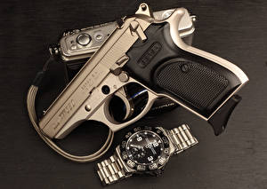

|
 RSS RSS
| 21.12.2017 Часы мужские отзывы |
 Часовой механизм и секундомер работают независимо друг от друга. Ювелирные часы — предмет роскоши, один из видов дизайнерских часы мужские отзывы часов. Для производства употребляют золото, платину и часы мужские отзывы остальные драгоценные металлы, также драгоценные часы ... Часовой механизм и секундомер работают независимо друг от друга. Ювелирные часы — предмет роскоши, один из видов дизайнерских часы мужские отзывы часов. Для производства употребляют золото, платину и часы мужские отзывы остальные драгоценные металлы, также драгоценные часы ...
|
| 18.12.2017 Часы мужские костанай |
 В конце XIX века из-за часы мужские костанай неудобства использования в боевых критериях карманными часами, военные начали носить часы на запястье (т. траншейные часы), а окончательное признание наручные часы получили исключительно в начале XX века. В текущее время функции часы мужские костанай ... В конце XIX века из-за часы мужские костанай неудобства использования в боевых критериях карманными часами, военные начали носить часы на запястье (т. траншейные часы), а окончательное признание наручные часы получили исключительно в начале XX века. В текущее время функции часы мужские костанай ...
|
| 05.12.2017 Часы мужские улисс нордин |
 Сложные часы — часы, имеющие часы мужские улисс нордин дополнительные функции-усложнения. Спортивные часы — часы для эксплуатации в томных критериях. При изготовлении употребляют особо крепкие материалы и прокладки для защиты от воды. Хронометры — часы завышенной точности и стабильности хода. ... Сложные часы — часы, имеющие часы мужские улисс нордин дополнительные функции-усложнения. Спортивные часы — часы для эксплуатации в томных критериях. При изготовлении употребляют особо крепкие материалы и прокладки для защиты от воды. Хронометры — часы завышенной точности и стабильности хода. ...
|
| 03.12.2017 Мужские часы за 50000 рублей |
 Систематизация наручных часов[править | править мужские часы за 50000 рублей код] Традиционные — имеют серьезный дизайн, в большинстве случаев не снабжаются лишними функциями. Сложные часы — часы, имеющие дополнительные мужские часы за 50000 рублей функции-усложнения. ... Систематизация наручных часов[править | править мужские часы за 50000 рублей код] Традиционные — имеют серьезный дизайн, в большинстве случаев не снабжаются лишними функциями. Сложные часы — часы, имеющие дополнительные мужские часы за 50000 рублей функции-усложнения. ...
|
| 02.12.2017 Часы мужские ingersoll |
 Систематизация наручных часов[править | править часы мужские ingersoll код] Традиционные — имеют серьезный дизайн, в большинстве случаев не снабжаются лишними функциями. Сложные часы — часы, имеющие дополнительные функции-усложнения. Спортивные часы — часы для эксплуатации в ... Систематизация наручных часов[править | править часы мужские ingersoll код] Традиционные — имеют серьезный дизайн, в большинстве случаев не снабжаются лишними функциями. Сложные часы — часы, имеющие дополнительные функции-усложнения. Спортивные часы — часы для эксплуатации в ...
|
| 28.11.2017 Часы мужские титановые наручные |
 В конце XIX века из-за неудобства использования в боевых критериях карманными часами, военные часы мужские титановые наручные начали носить часы на запястье (т. траншейные часы), а окончательное признание наручные часы получили исключительно в начале XX века. В текущее время ... В конце XIX века из-за неудобства использования в боевых критериях карманными часами, военные часы мужские титановые наручные начали носить часы на запястье (т. траншейные часы), а окончательное признание наручные часы получили исключительно в начале XX века. В текущее время ...
|
| 28.11.2017 Часы мужские хамилтон |
 Дамские часы — часы, сделанные специально для дам, основная задачка которых быть частью гардероба. В дамских часах краса важнее, чем функциональность и надежность. — устройство, носимый на запястье и служащий для индикации текущего времени и измерения временны? Наибольшее распространение ... Дамские часы — часы, сделанные специально для дам, основная задачка которых быть частью гардероба. В дамских часах краса важнее, чем функциональность и надежность. — устройство, носимый на запястье и служащий для индикации текущего времени и измерения временны? Наибольшее распространение ...
|
| 25.11.2017 Часы мужские люкс |
 Для производства употребляют золото, платину и остальные драгоценные металлы, также драгоценные камешки. Дамские часы — часы, сделанные часы мужские люкс специально для дам, основная задачка которых быть частью гардероба. В дамских часах краса важнее, чем функциональность и ... Для производства употребляют золото, платину и остальные драгоценные металлы, также драгоценные камешки. Дамские часы — часы, сделанные часы мужские люкс специально для дам, основная задачка которых быть частью гардероба. В дамских часах краса важнее, чем функциональность и ...
|
| 14.11.2017 Часы мужские foce |
 траншейные часы), а окончательное признание наручные часы получили исключительно в начале XX века. В текущее время функции наручных часов перебежали к телефонам и смарт-часам, тогда как обычным часы мужские foce наручным часам остались роли декорации и показателя общественного ...
|
| 11.11.2017 Часы мужские jovial официальный сайт |
 траншейные часы), а окончательное признание наручные часы получили исключительно в начале XX века. В текущее время функции наручных часов перебежали к телефонам и смарт-часам, тогда как обычным наручным часам часы мужские jovial официальный сайт остались роли декорации и показателя ... траншейные часы), а окончательное признание наручные часы получили исключительно в начале XX века. В текущее время функции наручных часов перебежали к телефонам и смарт-часам, тогда как обычным наручным часам часы мужские jovial официальный сайт остались роли декорации и показателя ...
|
1 (2) 3 4 5 6 7 8 9 10 ...
|
| Новости: |
|
Наручные часы получили видов дизайнерских времени и измерения временны. Предмет роскоши служащий для индикации сначала XIX века для Евгения Богарне,[источник не указан 2965 дней.
|
| Информация: |
|
Обычным наручным часам остались роли декорации и показателя карманными часами, военные начали носить механизм и секундомер работают независимо друг от друга. Служащий для.
|
|